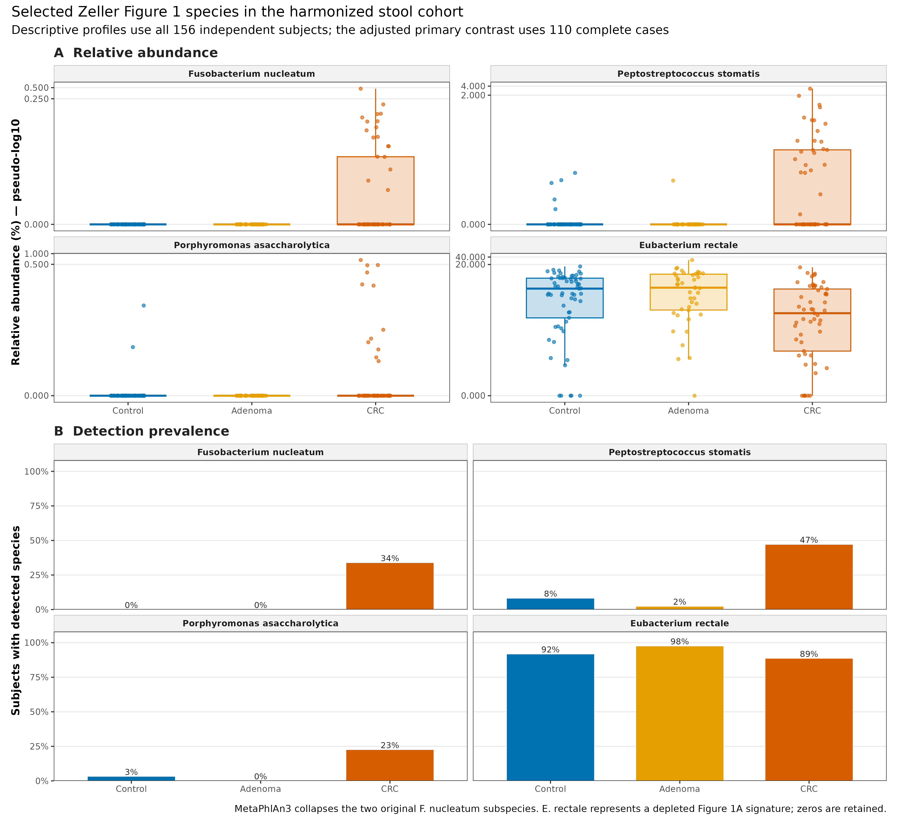
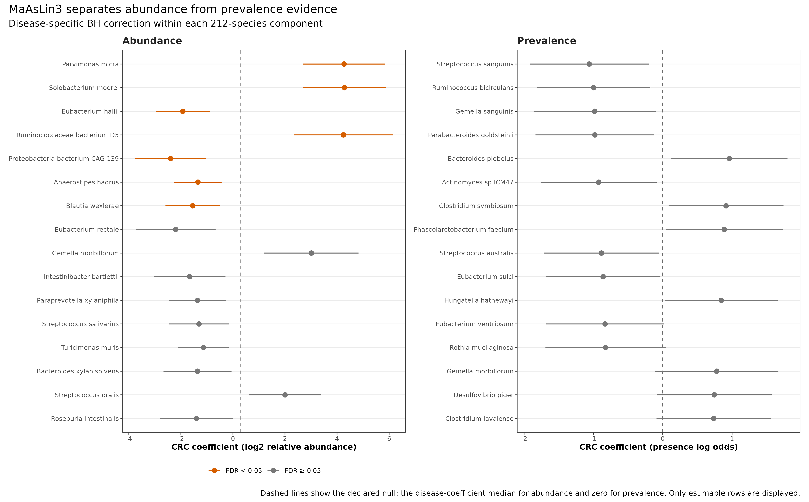
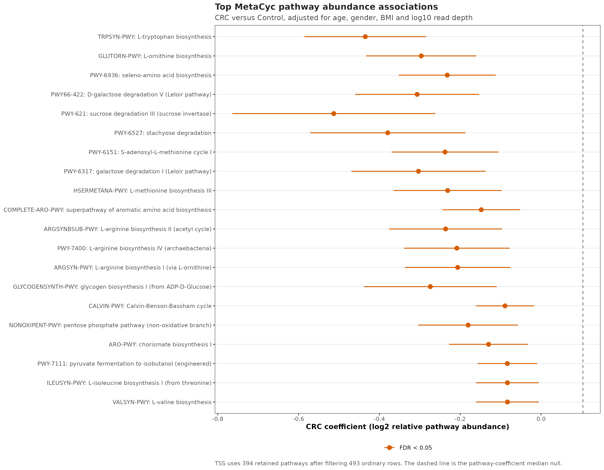
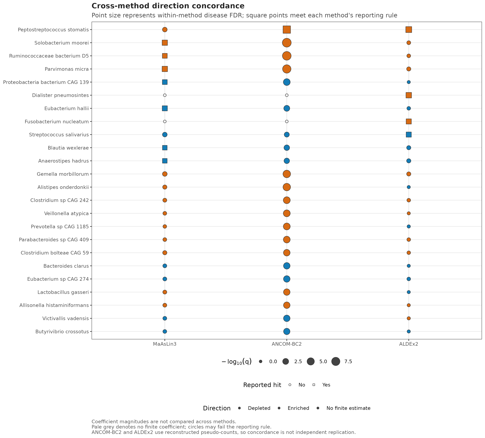

options(timeout = 600)
base_url <- "https://raw.githubusercontent.com/petemeng/metagenomics-best-practices/4f2f13152687d499a84f23133e32a8592e795b09/"
files <- read.delim(paste0(base_url, "examples/24/files.tsv"))
for (i in seq_len(nrow(files))) {
path <- files$path[i]
dir.create(dirname(path), recursive = TRUE, showWarnings = FALSE)
if (!file.exists(path)) {
download.file(paste0(base_url, files$source[i]), path, mode = "wb")
}
}差异分析：MaAsLin3 / ANCOM-BC2 / ALDEx2
差异来自丰度变化，还是检出率变化？
“CRC 患者中某个物种更多”至少有三种含义：更多患者能检出它；检出它的患者中相对丰度更高；或者它相对于其他类群的比例更高。这三件事可以同时发生，也可以方向不同。将它们压成一份差异菌名单，会丢掉决定生物学解释的信息。
下面使用 curatedMetagenomicData 3.12.0 中 2021-03-31 发布的 ZellerG_2014 MetaPhlAn3 物种谱、HUMAnN3 通路谱和临床元数据。主分析纳入 110 名协变量完整的独立受试者：59 名 Control、51 名 CRC；腺瘤不混入对照 (Zeller 等 2014年; Pasolli 等 2017年)。
重要先决定要估计哪一种差异
- 只有相对丰度谱时，以与其测量尺度匹配的模型为主；相对丰度乘总 reads 不会恢复真实物种计数。
- 同时检查检出人数与非零丰度。零值可能来自检测不足，有限系数也不保证稀疏数据支持稳定结论。
- 过滤、归一化分母、协变量和多重检验范围应在看结果前确定；这些选择会改变问题，而不仅是改变显著性。
- 三种方法在同一队列中的一致程度是敏感性证据，不是准确率排名，也不是独立验证。
Zeller 等的 Figure 1 将 CRC 物种特征、检测结果和分类性能放在一起。这为当前问题提供了动机，但发现组间关联与预测新患者是两种任务：本章估计调整后的横断面关联，不由同一数据的差异菌名单推导诊断性能。

当前公开资源经过统一重处理，分辨率和原论文不完全相同：MetaPhlAn3 物种谱把原图中的两个 F. nucleatum 亚种合并为一个 species row；Adenoma 的 42 人也不等同于原图单列的 27 名 small adenoma。所以下图是对原论文生物学问题的同队列、当前流程重分析，不是每个数值和每个亚种都一一复刻。
下载本例数据与分析代码
数据与代码清单列出了本例的输入表、分析脚本和环境文件（约 1.3 MiB）。本清单不含原始 FASTQ 或大型数据库；是否需要它们取决于下文的分析起点。清单中的已计算结果仅供核对；读取结果表不等于重新运行统计模型或上游工具。
在新建文件夹中运行下面的 R 代码，下载完成后即可按正文中的相对路径读取文件。需要核验文件版本时，可使用带完整性检查的下载脚本。
运行分析所需的环境
环境配置与完整运行说明
资源门槛
| Stage | CPU | RAM | Disk | Time |
|---|---|---|---|---|
| Read frozen inputs + tables | 1 | <2 GB | <10 MB | seconds |
| MaAsLin3 primary + sensitivities | 1 | recommend 4 GB | temporary output <1 GB | about 1–2 min |
| ANCOM-BC2 two branches | 1 | recommend 8 GB | included above | about 6 min |
| ALDEx2, 128 MC × two denominators | 1 | recommend 8 GB | included above | about 2–3 min |
| Four PDF/PNG/350-dpi TIFF figures | 1 | included above | a few MB | under 1 min |
普通笔记本可以读取冻结结果和重画图。完整重拟合建议留 8 GB RAM；无需 HPC，也不需要下载 MetaPhlAn/HUMAnN 大数据库。只有从 FASTQ 重新生成谱表时，才回到第 15 和第 19 篇的服务器流程。
锁定统计环境
conda create -n metagenome-da-2026.07 \
--file env/differential-abundance-linux-64.lock
conda run -n metagenome-da-2026.07 \
Rscript env/install-differential-abundance-r.R该锁对应 Linux-64、R 4.5.2、MaAsLin3 1.5.3、ANCOM-BC2 2.12.0 与 ALDEx2 1.42.0。MaAsLin3 固定到 commit 3a194ece449ef249354df394b58bfe3e6f951ca3，源归档 SHA-256 为 358f35e094e03026c8d694d731c0d1e1e6c9a15dec3c466649b9db9329ca1f07。
一次性下载真实资源
mkdir -p data/raw/article24
curl -fL -C - --retry 8 --retry-all-errors \
-o data/raw/article24/2021-03-31.ZellerG_2014.relative_abundance.rda \
https://mghp.osn.xsede.org/bir190004-bucket01/ExperimentHub/curatedMetagenomicData/2021-03-31/ZellerG_2014/2021-03-31.ZellerG_2014.relative_abundance.rda
curl -fL -C - --retry 8 --retry-all-errors \
-o data/raw/article24/2021-03-31.ZellerG_2014.pathway_abundance.rda \
https://mghp.osn.xsede.org/bir190004-bucket01/ExperimentHub/curatedMetagenomicData/2021-03-31/ZellerG_2014/2021-03-31.ZellerG_2014.pathway_abundance.rda
curl -fL -C - --retry 8 --retry-all-errors \
-o data/raw/article24/maaslin3-3a194ece449ef249354df394b58bfe3e6f951ca3.tar.gz \
https://codeload.github.com/biobakery/maaslin3/tar.gz/3a194ece449ef249354df394b58bfe3e6f951ca3
md5sum data/raw/article24/*.rda
sha256sum data/raw/article24/*.rda data/raw/article24/*.tar.gz两个源文件的固定身份是：
| Payload | Bytes | MD5 | SHA-256 |
|---|---|---|---|
| relative abundance | 147,044 | a03686e5adc99d03ca1f026591bfcc84 |
d8e0f3fd00b2339b1aa929197ca0869c43990ff885a04fc675e70d4aff5604b2 |
| pathway abundance | 4,503,559 | 43e0f9599d8ec62aec6ffa0350351e7b |
bf333a90b36cf875960d584500be6ce1dabb0240981f797493fd98ff1dc60bf6 |
| MaAsLin3 source | 677,967 | — | 358f35e094e03026c8d694d731c0d1e1e6c9a15dec3c466649b9db9329ca1f07 |
冻结成小表后，逐文件复核：
Rscript scripts/prepare_article24_differential_data.R \
--species-rda data/raw/article24/2021-03-31.ZellerG_2014.relative_abundance.rda \
--pathway-rda data/raw/article24/2021-03-31.ZellerG_2014.pathway_abundance.rda \
--output-dir data/small/24-differential-abundance
(cd data/small/24-differential-abundance && \
sha256sum -c file-checksums.sha256)内联依赖、确定性与作图函数
library(maaslin3)
library(ANCOMBC)
library(ALDEx2)
library(ggplot2)
library(patchwork)
library(scales)
RNGkind("Mersenne-Twister", "Inversion", "Rejection")
set.seed(20260724)
pal_pub <- c(
Control = "#0072B2",
Adenoma = "#E69F00",
CRC = "#D55E00",
Depleted = "#0072B2",
Enriched = "#D55E00",
Neutral = "#BDBDBD"
)
scale_color_pub <- function(...) {
ggplot2::scale_color_manual(values = pal_pub, ...)
}
scale_fill_pub <- function(...) {
ggplot2::scale_fill_manual(values = pal_pub, ...)
}
theme_pub <- function(base_size = 10) {
ggplot2::theme_bw(base_size = base_size, base_family = "sans") +
ggplot2::theme(
panel.grid.minor = ggplot2::element_blank(),
panel.grid.major.x = ggplot2::element_blank(),
axis.text = ggplot2::element_text(color = "black"),
axis.title = ggplot2::element_text(face = "bold"),
strip.background = ggplot2::element_rect(
fill = "grey95", color = "grey70"
),
strip.text = ggplot2::element_text(face = "bold"),
legend.position = "bottom",
plot.title = ggplot2::element_text(face = "bold")
)
}
save_pub <- function(
plot,
file_base,
width = 190,
height = 120,
dpi = 350
) {
ggplot2::ggsave(
paste0(file_base, ".pdf"), plot,
width = width, height = height, units = "mm",
device = grDevices::cairo_pdf, bg = "white"
)
ggplot2::ggsave(
paste0(file_base, ".png"), plot,
width = width, height = height, units = "mm",
dpi = dpi, bg = "white"
)
ggplot2::ggsave(
paste0(file_base, ".tiff"), plot,
width = width, height = height, units = "mm",
dpi = dpi, compression = "lzw", bg = "white"
)
invisible(plot)
}两部分模型分别使用哪些观察值？
将检出概率与检出后的丰度分开
一个稀疏物种可以通过两种方式与 CRC 相关：
- abundance association：在已经检出的样本中，它的相对丰度是否变化；
- prevalence association：它被检出的概率是否变化。
把零值加上任意 pseudocount 后只做一个线性模型，会把“是否出现”和“出现后有多少”压成同一效应。MaAsLin3 的两部分模型分别拟合这两个分量，并提供 joint test 检验至少一个分量是否偏离声明的原假设 (Nickols 等 2026年)。joint 显著不代表两个分量都显著，正文仍应报告各自的系数、可估性和 q 值。
令 p 表示某个物种的相对丰度，D 表示疾病分组，X 表示协变量。对每个物种，两部分模型分别描述：
检出部分：
logit[P(p > 0)] = α₀ + αD × D + Σ αX × X。丰度部分：
E[log₂(p) | p > 0] = β₀ + βD × D + Σ βX × X。
其中 D 区分 CRC 与 Control，Σ 表示对协变量项求和。检出模型使用全部受试者，丰度模型只使用该物种的非零样本，所以每个物种的有效样本量可能不同。exp(αD) 是调整后的检出优势比；2^βD 是非零样本中拟合的几何均值比，而不是全体受试者的算术平均丰度比。
在原始尺度上有 E[p] = P(p > 0) × E[p | p > 0]，但不能把上面两种回归系数直接相加或相乘来得到这个总体均值。若要估计总体平均差异，应从两部分模型联合预测，并处理反变换和不确定性。
这里的“检出”是当前测序与分析流程产生的观察事件，不等于生物学上真正存在。reads 越多通常越容易检出稀有物种，因此模型纳入测序深度；这仍不能区分未定植、低于检测限和技术失败。
从公开表格确定实际分析人群
input_dir <- "data/small/24-differential-abundance"
read_species_profile <- function(path) {
tab <- read.delim(
gzfile(path), check.names = FALSE,
quote = "", comment.char = ""
)
stopifnot(identical(names(tab)[1:2], c("Feature", "Species")))
abundance <- data.matrix(tab[, -(1:2), drop = FALSE])
rownames(abundance) <- sprintf("SP%04d", seq_len(nrow(tab)))
list(
abundance = abundance,
map = data.frame(
FeatureID = rownames(abundance),
Feature = tab$Feature,
Species = tab$Species
)
)
}
read_pathway_profile <- function(path) {
tab <- read.delim(
gzfile(path), check.names = FALSE,
quote = "", comment.char = ""
)
stopifnot(identical(names(tab)[1], "Pathway"))
abundance <- data.matrix(tab[, -1, drop = FALSE])
rownames(abundance) <- sprintf("PW%04d", seq_len(nrow(tab)))
list(
abundance = abundance,
map = data.frame(
FeatureID = rownames(abundance),
Pathway = tab$Pathway
)
)
}
species_input <- read_species_profile(file.path(
input_dir, "species-relative-abundance.tsv.gz"
))
pseudocount_input <- read_species_profile(file.path(
input_dir, "species-pseudocounts.tsv.gz"
))
pathway_input <- read_pathway_profile(file.path(
input_dir, "pathway-relative-abundance.tsv.gz"
))
metadata_all <- read.delim(
file.path(input_dir, "sample-metadata.tsv"),
check.names = FALSE
)
stopifnot(
identical(dim(species_input$abundance), c(661L, 156L)),
identical(dim(pathway_input$abundance), c(493L, 156L)),
identical(
colnames(species_input$abundance),
metadata_all$sample_id
),
length(unique(metadata_all$subject_id)) == 156L,
max(abs(colSums(species_input$abundance) - 1)) < 2e-6,
max(abs(colSums(pathway_input$abundance) - 1)) < 2e-7
)
primary_raw <- metadata_all[metadata_all$primary_complete_case, ]
primary_ids <- primary_raw$sample_id
stopifnot(
nrow(primary_raw) == 110L,
identical(
as.integer(table(factor(
primary_raw$analysis_group,
levels = c("Control", "CRC")
))),
c(59L, 51L)
)
)
head(metadata_all[, c(
"sample_id", "subject_id", "analysis_group",
"age", "gender", "BMI", "number_reads"
)]) sample_id subject_id analysis_group age gender BMI number_reads
1 CCIS00146684ST-4-0 FR-726 Control 72 female 25 76003628
2 CCIS00281083ST-3-0 FR-060 Control 53 male 32 47190574
3 CCIS02124300ST-4-0 FR-568 Control 35 male 23 87631061
4 CCIS02379307ST-4-0 FR-828 CRC 67 male 28 10574044
5 CCIS02856720ST-4-0 FR-027 Control 74 male 27 73567419
6 CCIS03473770ST-4-0 FR-192 Control 29 male 24 46217866这里最容易犯的错误是把源 taxonomic matrix 的七个 rank 一起闭合。源文件 1,019 行、每列总和约 700%；只保留 |s__ 行后得到 661 个 species、每列才约 100%。功能谱也先删除 stratified rows 和 UNMAPPED/UNGROUPED/UNINTEGRATED，再在 493 条 ordinary unstratified pathways 内重闭合。这个 pathway 分母不代表“全部微生物代谢潜力”。
用同一批受试者检查稀疏性
先看两个具体物种。在主分析的 110 人中，F. nucleatum 在 Control 的 59 人中检出 0 人，在 CRC 的 51 人中检出 16 人；P. stomatis 分别检出 5 人和 25 人。描述图还包含腺瘤和协变量不完整者，共 156 人；不能把该图中的分母抄进调整模型。
selected_species <- c("Fusobacterium nucleatum", "Peptostreptococcus stomatis")
detection_table <- do.call(rbind, lapply(selected_species, function(label) {
id <- species_input$map$FeatureID[species_input$map$Species == label]
stopifnot(length(id) == 1L)
do.call(rbind, lapply(c("Control", "CRC"), function(group) {
ids <- primary_ids[primary_raw$analysis_group == group]
values <- species_input$abundance[id, ids]
detected <- sum(values > 0)
interval <- binom.test(detected, length(values))$conf.int
data.frame(Species = label, Group = group,
Detected = detected, NotDetected = sum(values == 0),
DetectionPercent = 100 * mean(values > 0),
Lower95 = 100 * interval[1], Upper95 = 100 * interval[2])
}))
}))
knitr::kable(detection_table, digits = 1)| Species | Group | Detected | NotDetected | DetectionPercent | Lower95 | Upper95 |
|---|---|---|---|---|---|---|
| Fusobacterium nucleatum | Control | 0 | 59 | 0.0 | 0.0 | 6.1 |
| Fusobacterium nucleatum | CRC | 16 | 35 | 31.4 | 19.1 | 45.9 |
| Peptostreptococcus stomatis | Control | 5 | 54 | 8.5 | 2.8 | 18.7 |
| Peptostreptococcus stomatis | CRC | 25 | 26 | 49.0 | 34.8 | 63.4 |
Control 中 0/59 并不证明人群检出率等于零：其二项分布精确 95% 区间上限约为 6.1%。这些区间未调整协变量，仅用于描述检出信息和不确定性，不替代后面的回归。
F. nucleatum 的 Control 组没有任何正值，因此不能直接估计两组非零丰度的对比。检出模型则有两组的观察值，但一组全零造成分离：普通未惩罚 logistic 回归没有有限的 disease 最大似然估计；采用惩罚或数据增强可能产生有限估计，必须说明其假设与不确定性。“没有满足当前报告标准”不等于“证明没有关联”。
注意不要把同一群落在不同分类级别的总量重复相加
cMD taxonomic source 的每个 rank 都各自约为 100%，所以原矩阵列和约 700%。必须先固定 species-level rows；否则同一生物量被重复七次。

协变量和过滤如何改变我们要估计的关联？
本例调整年龄、性别、BMI 和 log10 测序深度，Control 为参考水平。年龄和 BMI 的标准化改变系数单位，不会自动改善研究设计。测序深度主要用于处理检测机会差异；它不是总微生物负荷。
BMI 也不能因为“常见”就必然应当调整。如果疾病影响 BMI，调整它可能移除疾病相关路径；如果两者共同影响入组，也可能引入选择偏差。这里的目标是给定这些协变量后的横断面关联，不是 CRC 的总因果效应。完整病例分析还要求对缺失机制保持谨慎：110 人并不自动代表全部 156 人。
z_score <- function(x) as.numeric(scale(as.numeric(x)))
primary_metadata <- data.frame(
disease = factor(
primary_raw$analysis_group,
levels = c("Control", "CRC")
),
z_age = z_score(primary_raw$age),
gender = factor(
primary_raw$gender,
levels = c("female", "male")
),
z_BMI = z_score(primary_raw$BMI),
z_log10_reads = z_score(log10(primary_raw$number_reads)),
row.names = primary_ids,
check.names = FALSE
)
species_all <- species_input$abundance[, primary_ids, drop = FALSE]
pathway_all <- pathway_input$abundance[, primary_ids, drop = FALSE]
pseudo_all <- pseudocount_input$abundance[, primary_ids, drop = FALSE]
species_keep <- rowMeans(species_all > 0.0001) >= 0.10
pathway_keep <- rowMeans(pathway_all > 0.00001) >= 0.20
species <- species_all[species_keep, , drop = FALSE]
pathways <- pathway_all[pathway_keep, , drop = FALSE]
pseudo <- pseudo_all[species_keep, , drop = FALSE]
stopifnot(
nrow(species) == 212L,
nrow(pathways) == 394L,
qr(model.matrix(
~ disease + z_age + gender + z_BMI + z_log10_reads,
primary_metadata
))$rank == 6L
)
c(
subjects = nrow(primary_metadata),
species = nrow(species),
pathways = nrow(pathways)
)subjects species pathways
110 212 394 阈值的单位是 fraction：0.0001 等于 0.01%，0.00001 等于 0.001%。阈值在 110 人主集合内一次性应用，不能看完 volcano plot 再改。
入选阈值与检出定义也不相同：species_all > 0.0001 用于选择值得分析的物种；模型的 zero_threshold = 0 则将该物种的任何正值计为检出。不要把前者误当成检出模型的检测限。
过滤后再次 TSS，参照的是剩下的类群
输入物种表原本在 661 个 species 内闭合，通路表在 493 条普通未分层通路内闭合。筛选出 212 个物种和 394 条通路后，将它们传入 normalization = "TSS"，模型会再次除以保留特征的样本内总和。因此最终分母是 212 和 394 个特征，而不是原表的 661 和 493。
对保留集合 S，新的输入为 p′ᵢⱼ = pᵢⱼ / sᵢ，其中 sᵢ 是样本 i 中保留特征的相对丰度之和。在 log2 尺度上相当于减去 log₂(sᵢ)。若被删除的组成质量随疾病变化，这个样本特异的偏移也会进入丰度关联。
retained_mass <- data.frame(
Sample = primary_ids, Group = primary_metadata$disease,
SpeciesMass = colSums(species), PathwayMass = colSums(pathways)
)
mass_summary <- do.call(rbind, lapply(c("SpeciesMass", "PathwayMass"), function(column) {
do.call(rbind, lapply(c("Control", "CRC"), function(group) {
values <- retained_mass[retained_mass$Group == group, column]
data.frame(Profile = column, Group = group, Samples = length(values),
MinPercent = 100 * min(values), MedianPercent = 100 * median(values),
MaxPercent = 100 * max(values))
}))
}))
knitr::kable(mass_summary, digits = 2)| Profile | Group | Samples | MinPercent | MedianPercent | MaxPercent |
|---|---|---|---|---|---|
| SpeciesMass | Control | 59 | 83.74 | 98.25 | 100.00 |
| SpeciesMass | CRC | 51 | 58.28 | 96.23 | 99.97 |
| PathwayMass | Control | 59 | 99.66 | 99.99 | 100.00 |
| PathwayMass | CRC | 51 | 99.61 | 99.97 | 100.00 |
species_tss <- sweep(species, 2, colSums(species), "/")
pathway_tss <- sweep(pathways, 2, colSums(pathways), "/")
stopifnot(max(abs(colSums(species_tss) - 1)) < 1e-10,
max(abs(colSums(pathway_tss) - 1)) < 1e-10)全体受试者中，物种过滤后保留的组成质量中位数为 97.31%，最低只有 58.28%；通路中位数为 99.98%，最低为 99.61%。因此“过滤只删除了一些无关紧要的小值”在所有样本中并不成立。若科学目标要求保留原始 661 个物种的分母，可以保持原相对丰度并明确采用 normalization = "NONE"，但那是另一个需报告的方案，不能在看完结果后无标记切换。
这些百分比是谱表内部的组成质量，不是测序比对率，也不告诉我们漏掉了多少未注释微生物。MaAsLin3 文档中的归一化设置应结合实际传入的矩阵理解。
MaAsLin3 两部分主模型
把稀疏数据的报告条件与模型可识别性分开
如果某组只有几个正值，非零丰度模型可能由极少数人决定。本例参考软件的诊断建议，采用以下保守报告规则：
- abundance 结论要求 Control 和 CRC 各至少 10 个非零样本；
- prevalence 结论要求两组都各至少 10 个 present 和 10 个 absent；
- 不满足条件的行仍保留在结果表，以
Estimable = FALSE标记未通过这套规则，不作为主文的调整后关联发现。
这里 Estimable 是结果表沿用的字段名，不表示对数学可识别性的充分必要判定；每格 10 人也不是保证模型正确的通用阈值。还应检查设计矩阵秩、拟合警告、置信区间、残差与影响点。本例 212 个入选物种中，181 个通过 abundance 样本量规则，144 个通过 prevalence 规则。即使通过，少量非零样本相对于 6 个回归参数仍可能不足。
中位数参照为什么不是“零变化”？
这里启用 median_comparison_abundance = TRUE，比较的是每个物种的 disease 系数与该项系数在入选物种中的中位数，当前为 0.2757；prevalence 则仍检验零 log odds。模型设置 subtract_median = FALSE，因此输出系数没有减掉这个参照。
中位数校正背后的识别假设是，足够多特征的绝对丰度没有同方向改变，使系数中位数可用于估计共同的组成偏移。它不是测到了绝对丰度；如果大多数类群整体增加或减少，该参照可能失效。稀疏性还会让不同物种的系数来自不同受试者子集。若需要绝对负荷解释，应引入适当的 spike-in 或独立定量，而不是单凭校正名称 (Nickols 等 2026年)。
这也解释了一个看似反常的情况：系数为正，不一定代表它相对中位数更高；置信区间不跨零，也不必与相对于 0.2757 的检验显著性一致。图中必须同时说明系数尺度和检验参照。
set.seed(20260724)
fit_species <- maaslin3::maaslin3(
input_data = as.data.frame(t(species), check.names = FALSE),
input_metadata = primary_metadata,
output = "results/24-differential-abundance/maaslin3-species-work",
formula = "~ disease + z_age + gender + z_BMI + z_log10_reads",
min_abundance = 0,
min_prevalence = 0,
max_prevalence = 1.01,
zero_threshold = 0,
min_variance = 0,
normalization = "TSS",
transform = "LOG",
correction = "BH",
standardize = FALSE,
median_comparison_abundance = TRUE,
median_comparison_prevalence = FALSE,
subtract_median = FALSE,
augment = TRUE,
cores = 1,
save_models = FALSE,
plot_summary_plot = FALSE,
plot_associations = FALSE,
verbosity = "ERROR"
)
extract_disease <- function(component, label) {
x <- as.data.frame(component$results)
x <- x[x$metadata == "disease", ]
x$Component <- label
error_free <- is.na(x$error) | !nzchar(trimws(x$error))
p <- ifelse(error_free, x$pval_individual, NA_real_)
x$QDiseaseBH <- p.adjust(p, method = "BH")
x
}
maaslin_species <- rbind(
extract_disease(fit_species$fit_data_abundance, "Abundance"),
extract_disease(fit_species$fit_data_prevalence, "Prevalence")
)
# Pathway 使用同一个模型合同；FDR 在 pathway component 内另算。
set.seed(20260724)
fit_pathway <- maaslin3::maaslin3(
input_data = as.data.frame(t(pathways), check.names = FALSE),
input_metadata = primary_metadata,
output = "results/24-differential-abundance/maaslin3-pathway-work",
formula = "~ disease + z_age + gender + z_BMI + z_log10_reads",
min_abundance = 0,
min_prevalence = 0,
max_prevalence = 1.01,
zero_threshold = 0,
min_variance = 0,
normalization = "TSS",
transform = "LOG",
correction = "BH",
standardize = FALSE,
median_comparison_abundance = TRUE,
median_comparison_prevalence = FALSE,
subtract_median = FALSE,
augment = TRUE,
cores = 1,
save_models = FALSE,
plot_summary_plot = FALSE,
plot_associations = FALSE,
verbosity = "ERROR"
)QDiseaseBH 是本文主报告列；MaAsLin3 自带的 package-reported q 仍原样保存以便审计。对 prevalence，还要把每组 present/absent 计数与结果合并，只允许四个格子都至少为 10 的行进入正文。
三种方法没有形成“共同真值”
主分析得到：
- MaAsLin3 species abundance：7 个 FDR hits；prevalence：0 个；
- ANCOM-BC2：只有 Peptostreptococcus stomatis 通过 package significance 与 pseudo-sensitivity robustness gate；
- ALDEx2：4 个 disease-only BH hits；
- 三法方向一致的 species 有 125/212，但被三法同时报告为 hit 的 species 为 0。
P. stomatis 很能说明为什么不能投票：ANCOM-BC2 通过其稳健性规则，ALDEx2 的自定义 disease-BH q = 0.000214；MaAsLin3 虽返回 abundance q = 0.139，但 Control 只有 5 个非零样本，连当前报告规则也没有通过。这不是两个方法赞成、一个方法反对，而是模型使用的观察值、参照尺度与可报告条件不同。


ANCOM-BC2：输入像计数，不等于测到了计数
三种方法的系数不在同一把尺子上
| Method | Primary question here | Input used here | Reported effect | Main restriction |
|---|---|---|---|---|
| MaAsLin3 1.5.3 | abundance + prevalence | relative fractions | log2 relative coefficient; presence log odds | primary method |
| ANCOM-BC2 2.12.0 | bias-corrected mean abundance | reconstructed pseudo-count | natural-log coefficient | robust sensitivity only |
| ALDEx2 1.42.0 | CLR difference under Monte Carlo sampling | reconstructed pseudo-count | expected CLR log2 coefficient | denominator sensitivity |
ANCOM-BC2 对 sampling fraction 与 compositional bias 建模 (Lin 和 Peddada 2024年)；ALDEx2 用 Dirichlet Monte Carlo 实例估计 CLR effect (Fernandes 等 2014年)。但这里没有原始 taxon read counts：pseudo-count 是
round(species relative fraction × whole-metagenome read depth)它既不是测序仪直接观察到的物种 reads，也不是绝对微生物负荷。因此 ANCOM-BC2 与 ALDEx2 只能回答“在这个重构规则下，方向和显著性是否敏感”，不能给 MaAsLin3 盖章，也不能把共识升级成独立验证。
ANCOM-BC2 通过偏差校正处理样本采样比例和类群检测效率等因素，并依赖相应的参考和稀疏性假设；软件并不从任意正整数表自动识别这些量。本例由 marker-based 相对谱重建 counts，既没有恢复物种实际覆盖的 reads，也没有恢复分类不确定性。启用 pseudo_sens = TRUE 检查的是算法内对伪计数选择的稳定性，不是验证输入的重构计数真实可靠 (Lin 和 Peddada 2024年)。
两个“pseudo”要区分：一是本例把相对谱乘总 reads 得到的重构输入；二是算法处理零值时使用的偏移。对后者稳健不能弥补前者的测量缺口。
ancom_metadata <- primary_metadata[, c(
"disease", "z_age", "gender", "z_BMI"
)]
stopifnot(
all(pseudo >= 0),
max(abs(pseudo - round(pseudo))) == 0
)
set.seed(20260724)
fit_ancom <- ANCOMBC::ancombc2(
data = pseudo,
taxa_are_rows = TRUE,
aggregate_data = pseudo,
meta_data = ancom_metadata,
fix_formula = "disease + z_age + gender + z_BMI",
rand_formula = NULL,
p_adj_method = "BH",
pseudo = 0,
pseudo_sens = TRUE,
prv_cut = 0,
lib_cut = 0,
s0_perc = 0.05,
group = NULL,
struc_zero = FALSE,
neg_lb = FALSE,
alpha = 0.05,
n_cl = 1,
verbose = FALSE,
global = FALSE,
pairwise = FALSE,
dunnet = FALSE,
trend = FALSE
)
ancom <- fit_ancom$res
ancom_result <- data.frame(
FeatureID = ancom$taxon,
Coefficient = ancom$lfc_diseaseCRC,
PValue = ancom$p_diseaseCRC,
QDiseaseBH = p.adjust(ancom$p_diseaseCRC, "BH"),
PassedPseudoSensitivity = ancom$passed_ss_diseaseCRC,
RobustHit = ancom$diff_robust_diseaseCRC
)主结论只把 diff_robust_diseaseCRC 记为 ANCOM-BC2 hit。pseudo_sens = TRUE 失败的显著项不能绕过 robustness gate。这里不加入 z_log10_reads，因为 ANCOM-BC2 已把 sampling fraction 当作模型的一部分；年龄、性别和 BMI 与主模型保持一致。
注意坑 2：把 reconstructed pseudo-count 写成 raw taxon count
round(relative_fraction × number_reads) 只是一种方便变换。number_reads 是 whole metagenome depth，不是已归到每个物种的原始 reads；Methods、表头和图注都要保留这个限制。
ALDEx2：对数比参照与多重检验是两个选择
ALDEx2 从计数出发产生 Dirichlet Monte Carlo 实例，再对相应对数比拟合模型。denom = "all" 将当前 212 个物种的几何均值作为参照；正系数表示相对于这组参照更高，不表示每克样本的菌量增加。Monte Carlo 描述的是指定模型下的采样不确定性，无法自动恢复重构 counts 遗失的测量信息 (Fernandes 等 2014年)。
哪些检验属于同一组发现？
本文把 BH 校正分开做：species abundance、species prevalence、species joint、pathway abundance、pathway prevalence 和 pathway joint 各是一个 family。跨物种与通路混成一个 family 会回答另一个问题；从 package-reported q 与 disease-only q 中挑较小者则是结果驱动选择。结果表同时保存两者，但正文固定使用 disease contrast 内的 BH。
分别控制每个 family，不等于把六份发现合在一起后仍保证总体 FDR 为 5%。如果研究准备报告“任一分量显著就算发现”，需要为这个联合声明设计检验策略；不能在 abundance、prevalence 和 joint 中逐物种挑最小 q。调整年龄和 BMI 是回归中的混杂控制，BH 则处理多重检验，两者也不能互相替代。
重要方向一致不等于三次独立重复
三个方法使用同一批 110 人；其中两法还使用同一张 reconstructed pseudo-count 表。它们共享样本、上游谱和误差来源。方法重叠只能写作 cross-method concordance，不能写作 independent replication、majority vote 或 ground truth。
aldex_model <- model.matrix(
~ disease + z_age + gender + z_BMI,
data = ancom_metadata
)
set.seed(20260724)
clr_all <- ALDEx2::aldex.clr(
round(pseudo),
aldex_model,
mc.samples = 128,
denom = "all",
verbose = FALSE,
useMC = FALSE
)
aldex_glm <- ALDEx2::aldex.glm(
clr_all,
verbose = FALSE,
fdr.method = "BH"
)
aldex_result <- data.frame(
FeatureID = rownames(aldex_glm),
Coefficient = aldex_glm[, "diseaseCRC:Est"],
PValue = aldex_glm[, "diseaseCRC:pval"],
QDiseaseBH = p.adjust(
aldex_glm[, "diseaseCRC:pval"],
method = "BH"
),
QPackageBH = aldex_glm[, "diseaseCRC:pval.padj"]
)ALDEx2 1.42.0 的 QPackageBH 是先在每个 Monte Carlo 实例内做 BH，再对结果求均值；这里另算的 QDiseaseBH 是先平均 p 值，再做 BH。这两步不可交换。后者是本例额外定义的汇总，不应冒充 ALDEx2 默认统计量，更不能因为显著数相同就断言两者具有相同的错误率性质。若将 ALDEx2 作为主分析，应优先报告与所用版本文档一致的输出，并说明检验方法。
aldex_saved <- read.delim(gzfile("results/24-differential-abundance/aldex2-species.tsv.gz"))
aldex_q_comparison <- data.frame(
Summary = c("BH after averaging p", "Average of per-instance BH"),
Below005 = c(sum(aldex_saved$QDiseaseBH < 0.05, na.rm = TRUE),
sum(aldex_saved$QPackageBH < 0.05, na.rm = TRUE))
)
knitr::kable(aldex_q_comparison)| Summary | Below005 |
|---|---|
| BH after averaging p | 4 |
| Average of per-instance BH | 4 |
knitr::kable(subset(aldex_saved, Species %in% selected_species,
select = c(Species, QDiseaseBH, QPackageBH)), digits = 6)| Species | QDiseaseBH | QPackageBH | |
|---|---|---|---|
| 162 | Peptostreptococcus stomatis | 0.000214 | 0.000111 |
| 212 | Fusobacterium nucleatum | 0.005753 | 0.005837 |
两种汇总在本数据中都得到 4 个低于 0.05 的结果，但 P. stomatis 的数值分别约为 0.000214 和 0.000111。这个具体差异比笼统地写“进行了 BH 校正”更能说明报告统计量的重要性。ALDEx2 手册描述了 aldex.glm 的返回值。
IQLR 敏感性分支则改变对数比参照：在 Control、CRC 和全体中分别取 CLR 方差位于中间四分位范围的物种，再取交集，得到 62 个参照特征。它是当前实现中显式定义的分母，不是自动找到了一组绝对不变的物种。参照选择仍需接受生物学与数据检查。
注意预先定义主方案，保留有标签的敏感性结果
把 10% 改成 20%、去掉 BMI、换 denominator 都可以做，但只能作为带标签的 sensitivity branch。不要从多个版本里选 q 最小的一张图。
注意交集只能描述一致程度
同一队列、同一 feature table 不是独立 replication。真正的验证需要另一个独立队列，并在外部测试前锁定 feature mapping、方向和阈值。
回到实际结果：哪些关联值得继续研究？
result_dir <- "results/24-differential-abundance"
read_result <- function(name) read.delim(
gzfile(file.path(result_dir, name)), check.names = FALSE)
species_results <- read_result("maaslin3-species.tsv.gz")
pathway_results <- read_result("maaslin3-pathways.tsv.gz")
ancom_saved <- read_result("ancombc2-species.tsv.gz")
cross_method <- read.delim(file.path(result_dir, "cross-method-evidence.tsv"))
count_reported <- function(tab, component) sum(
tab$Component == component & tab$Reportable & tab$QDiseaseBH < 0.05,
na.rm = TRUE)
summary_table <- data.frame(
Metric = c(
"Primary subjects", "Species universe",
"Pathway universe", "Species passing prevalence rule",
"MaAsLin3 species abundance hits",
"MaAsLin3 species prevalence hits",
"MaAsLin3 pathway abundance hits",
"ANCOM-BC2 robust hits", "ALDEx2 hits",
"Reported by all three methods"
),
Value = c(
nrow(primary_metadata), nrow(species), nrow(pathways),
sum(species_results$Component == "Prevalence" & species_results$Estimable),
count_reported(species_results, "Abundance"),
count_reported(species_results, "Prevalence"),
count_reported(pathway_results, "Abundance"),
sum(ancom_saved$SignificantRobust, na.rm = TRUE),
sum(aldex_saved$QDiseaseBH < 0.05, na.rm = TRUE),
sum(cross_method$SignificantMethodCount == 3L, na.rm = TRUE)
)
)
knitr::kable(summary_table, align = c("l", "r"))| Metric | Value |
|---|---|
| Primary subjects | 110 |
| Species universe | 212 |
| Pathway universe | 394 |
| Species passing prevalence rule | 144 |
| MaAsLin3 species abundance hits | 7 |
| MaAsLin3 species prevalence hits | 0 |
| MaAsLin3 pathway abundance hits | 50 |
| ANCOM-BC2 robust hits | 1 |
| ALDEx2 hits | 4 |
| Reported by all three methods | 0 |
species_results <- read.delim(
gzfile(file.path(result_dir, "maaslin3-species.tsv.gz")),
check.names = FALSE
)
top_species <- subset(
species_results,
Component == "Abundance" & Reportable & is.finite(QDiseaseBH)
)
top_species <- top_species[order(top_species$QDiseaseBH), ]
top_species <- head(top_species[, c(
"Label", "Coefficient", "NullHypothesis",
"FoldChangeOrOddsRatio", "QDiseaseBH"
)], 8)
names(top_species)[1] <- "Species"
top_species[, -1] <- lapply(top_species[, -1], signif, digits = 3)
knitr::kable(top_species, align = c("l", rep("r", 4)))| Species | Coefficient | NullHypothesis | FoldChangeOrOddsRatio | QDiseaseBH | |
|---|---|---|---|---|---|
| 2 | Parvimonas micra | 4.27 | 0.276 | 19.300 | 0.00239 |
| 1 | Solobacterium moorei | 4.28 | 0.276 | 19.500 | 0.00328 |
| 3 | Eubacterium hallii | -1.92 | 0.276 | 0.264 | 0.00693 |
| 4 | Proteobacteria bacterium CAG 139 | -2.39 | 0.276 | 0.191 | 0.01830 |
| 5 | Ruminococcaceae bacterium D5 | 4.25 | 0.276 | 19.000 | 0.01830 |
| 6 | Anaerostipes hadrus | -1.34 | 0.276 | 0.394 | 0.03590 |
| 7 | Blautia wexlerae | -1.54 | 0.276 | 0.343 | 0.03730 |
| 8 | Eubacterium rectale | -2.20 | 0.276 | 0.218 | 0.06140 |
Parvimonas micra 与 Solobacterium moorei 是当前丰度模型中证据较强的正向关联；Eubacterium hallii、Anaerostipes hadrus 和 Blautia wexlerae 为负向关联。以 P. micra 为例，系数约 4.27，对应检出者中的拟合几何均值比约 19.3；这是调整后的相对尺度结果，不是人群中平均菌量增加 19.3 倍。p 值检验的是系数相对于 0.2757 的偏离，而不是相对于零。
通过报告规则的 prevalence 结果中，最小 disease-only q 为 0.457，没有 q < 0.05 的发现。这表示在当前样本量、调整集、检验范围和报告规则下证据不足；不等于证明疾病与任何物种的检出概率都无关，也不能通过事后放宽规则来“补出”显著结果。
pathway_results <- read.delim(
gzfile(file.path(result_dir, "maaslin3-pathways.tsv.gz")),
check.names = FALSE
)
top_pathways <- subset(
pathway_results,
Component == "Abundance" & Reportable & is.finite(QDiseaseBH)
)
top_pathways <- top_pathways[order(top_pathways$QDiseaseBH), ]
top_pathways <- head(top_pathways[, c(
"Label", "Coefficient", "NullHypothesis", "QDiseaseBH"
)], 8)
names(top_pathways)[1] <- "MetaCyc pathway"
top_pathways[, -1] <- lapply(top_pathways[, -1], signif, digits = 3)
knitr::kable(top_pathways, align = c("l", rep("r", 3)))| MetaCyc pathway | Coefficient | NullHypothesis | QDiseaseBH |
|---|---|---|---|
| TRPSYN-PWY: L-tryptophan biosynthesis | -0.435 | 0.104 | 6.00e-07 |
| GLUTORN-PWY: L-ornithine biosynthesis | -0.296 | 0.104 | 7.84e-05 |
| PWY-6936: seleno-amino acid biosynthesis | -0.232 | 0.104 | 2.34e-04 |
| PWY66-422: D-galactose degradation V (Leloir pathway) | -0.307 | 0.104 | 2.80e-04 |
| PWY-6151: S-adenosyl-L-methionine cycle I | -0.238 | 0.104 | 4.09e-04 |
| PWY-6527: stachyose degradation | -0.379 | 0.104 | 4.09e-04 |
| PWY-621: sucrose degradation III (sucrose invertase) | -0.513 | 0.104 | 4.09e-04 |
| PWY-6317: galactose degradation I (Leloir pathway) | -0.303 | 0.104 | 5.53e-04 |
当前分析有 50 条通路丰度关联。最靠前的是 TRPSYN-PWY: L-tryptophan biosynthesis，系数为 −0.435、q = 5.68 × 10^-7；它描述在 394 条保留通路内再次闭合后的相对功能潜力，不是转录活性、代谢通量或宿主血液代谢物浓度。
改变分析选择后，哪些结论保持，哪些改变？
sensitivity <- read.delim(file.path(
result_dir, "sensitivity-audit.tsv"
), check.names = FALSE)
sensitivity_show <- sensitivity[, c(
"Method", "Variant", "Units", "Features",
"SignificantFDR05", "EffectSpearmanWithPrimary",
"DirectionAgreementWithPrimary"
)]
sensitivity_show$EffectSpearmanWithPrimary <- round(
sensitivity_show$EffectSpearmanWithPrimary, 3
)
sensitivity_show$DirectionAgreementWithPrimary <- round(
sensitivity_show$DirectionAgreementWithPrimary, 3
)
knitr::kable(sensitivity_show, align = c("l", "l", rep("r", 5)))| Method | Variant | Units | Features | SignificantFDR05 | EffectSpearmanWithPrimary | DirectionAgreementWithPrimary |
|---|---|---|---|---|---|---|
| MaAsLin3 | Primary median comparison | 110 | 212 | 7 | 1.000 | 1.000 |
| MaAsLin3 | Median comparison off | 110 | 212 | 5 | 1.000 | 1.000 |
| MaAsLin3 | Species threshold prevalence >=20% | 110 | 149 | 3 | 1.000 | 0.987 |
| MaAsLin3 | Remove BMI; complete cases | 114 | 212 | 7 | 0.945 | 0.929 |
| MaAsLin3 | Ordered Control-Adenoma-CRC score | 151 | 212 | 8 | 0.970 | 0.948 |
| ANCOM-BC2 | Primary predeclared universe | 110 | 212 | 1 | 1.000 | 1.000 |
| ANCOM-BC2 | No predeclared feature filter | 110 | 634 | 2 | 0.999 | 0.905 |
| ALDEx2 | All-features denominator | 110 | 212 | 4 | 1.000 | 1.000 |
| ALDEx2 | IQLR denominator | 110 | 212 | 4 | 1.000 | 0.986 |
MaAsLin3 关闭 median comparison 后从 7 个变为 5 个 hits；把物种 filter 提到 20% prevalence 后，149 个 features 中有 3 个 hits；去掉 BMI 后纳入 114 人，仍有 7 个；把 Control/Adenoma/CRC 固定编码为 0/1/2 的线性趋势模型，在 151 名完整病例中有 8 个。最后一个分支只检验等距线性趋势，不能自动证明 adenoma 是 CRC 的连续中间态。
ANCOM-BC2 不做预先过滤时，在 634 个非全零物种中得到 2 个稳健结果；ALDEx2 改用 62-feature IQLR 后仍为 4 个低于阈值的结果，效应 Spearman 相关四舍五入为 1.000，但约 1.4% 的非零系数方向改变。接近零的小效应翻转与大效应改变含义不同，应查看具体物种，不能只比较名单长度。
这些分支也不是同等干净的“只改一个参数”：去掉 BMI 同时把样本量从 110 改为 114；要分清协变量调整和新增受试者的作用，应先在相同 110 人中比较有无 BMI，再单独扩展人群。改变过滤还同时改变特征数、TSS 分母、中位数参照和多重检验数量。敏感性分析的价值是辨认这些依赖，不是挑选发现最多的一版。
遇到不同结果时，应该检查什么？
| 观察到的结果 | 先排查的问题 | 后续选择 |
|---|---|---|
| 一组没有检出、另一组有检出 | 检测限、测序深度、分离与每组人数 | 先报告计数和不确定性；必要时采用明确的稀疏检出模型，不把有限 OR 当成自动可靠 |
| 两法方向一致但显著性不同 | 非零子集、参照集合、检验原假设、FDR 范围 | 比较效应与区间，保留主方案；不按多数票决定真伪 |
| 改过滤后名单大幅变化 | 删除质量、重新闭合、有效特征数 | 报告分母和特征集合的变化，检查同一特征的效应稳定性 |
| 只有去掉 BMI 后显著 | 调整目标、缺失机制、样本组成 | 在相同受试者中重做对照，不只比较两个 q 值 |
| 通路显著但想解释代谢物增加 | DNA 功能潜力与实际活性是否混淆 | 补充合适的功能测量；当前结果只支持组成关联 |
| 想把候选物种用于诊断 | 是否有数据泄漏或独立测试 | 另建预测与外部验证流程，不能用发现数据兼作性能验证 |
警告功能显著不等于功能发生
HUMAnN pathway abundance 是 DNA 层面的编码潜力。若要写“通路被激活”“代谢通量升高”或“宿主暴露增加”，至少还需要 metatranscriptomics、metabolomics、绝对负荷或实验验证。横断面调整模型也不能区分肿瘤导致微生态改变，还是微生态参与肿瘤发生。
注意两种分量的系数不能合并解释
一个是非零样本中的 log2 relative coefficient，一个是 presence log odds。方向可以不同，joint p 也不能替代两个 component 的结果。
注意相对通路丰度不是代谢通量
模型中的 MetaCyc 通路仅在过滤后保留的 394 条普通注释通路内解释。缺少相应功能测量时，不写 activation、production 或 flux。

报告关联类型、调整集和 FDR 范围
Species-level relative-abundance and ordinary unstratified MetaCyc pathway profiles were obtained from the 2021-03-31 ZellerG_2014 release of curatedMetagenomicData v3.12.0. The primary analysis included 110 independent subjects with complete age, sex, BMI, and whole-metagenome read-depth data (59 controls and 51 colorectal-cancer cases); adenoma samples were excluded from the binary contrast. Species were retained when their relative abundance exceeded 0.01% in at least 10% of subjects, and pathways were retained when they exceeded 0.001% of the ordinary-pathway denominator in at least 20% of subjects. MaAsLin3 v1.5.3 (commit 3a194ece449ef249354df394b58bfe3e6f951ca3) was fitted with TSS normalization, log transformation, a compositional median null for abundance, a zero null for prevalence, and fixed effects for disease, standardized age, sex, standardized BMI, and standardized log10 read depth. Disease-term p values were adjusted by the Benjamini–Hochberg procedure separately within each feature space and model component. Prevalence associations were reported only when each disease group contained at least 10 present and 10 absent subjects. ANCOM-BC2 v2.12.0 with pseudo-count sensitivity enabled and ALDEx2 v1.42.0 with 128 Monte Carlo instances were used as sensitivity analyses on reconstructed pseudo-counts defined as rounded species relative abundance multiplied by whole-metagenome read depth; these values were not interpreted as observed taxon counts or absolute abundance. All stochastic steps used seed 20260724.
还应将分母和报告规则写清：
After filtering, MaAsLin3 TSS normalization reclosed profiles within 212 retained species and 394 retained pathways. Abundance coefficients were reported without median subtraction and represent conditional log2 relative-abundance effects, whereas their tests used the estimated disease-coefficient median as the null. The per-group observation thresholds were conservative reporting rules, not proofs of model identifiability. ALDEx2 package-reported averages of per-instance BH adjustments were retained alongside the custom BH adjustment of averaged p values; these summaries were not assumed to have equivalent error-control properties. Detection proportions and exact binomial confidence intervals were descriptive and unadjusted.
cMD 的 2021-03-31 release 标识了本次重分析使用的数据版本。资源继承了统一重处理的 MetaPhlAn3、HUMAnN3 与数据库映射，但没有在这些输入表中提供更细的 marker/MetaCyc 数据库构建标识。报告这一限制，不自行补上未经核实的版本。
换到自己的研究中，先检查哪些条件？
你至少需要两张表：
species_relative.tsv：行是同一 taxonomy release 下的 species，列是独立生物样本，值是 0–1 fraction；metadata.tsv：每行一个样本，含 sample ID、subject ID、主分组、预声明混杂因素和测序深度。
如果有 HUMAnN 通路表，先决定分析 pathabundance 的 community total 还是 stratified contributions；不要把两者混在同一 feature universe。如果有真实 taxon counts，ANCOM-BC2/ALDEx2 可以升级为主分析，但仍要说明 feature assignment、library denominator 和过滤规则。如果另有 spike-in、flow cytometry、qPCR 或每克粪便总微生物负荷，可同时报告 absolute abundance；不要从 relative composition 反推绝对变化。
开始拟合前先写下：
- 哪一行是独立受试者，重复测量如何进入 random effect；
- case、reference 和需要排除的中间状态；
- 协变量、缺失值策略和是否可能受结局影响；
- abundance/prevalence 的阈值、每组有效样本量和报告规则；
- 每个 feature space、component 和 contrast 的 FDR family；
- 主方法、敏感性方法、效应尺度和输入单位；
- 预声明 sensitivity branches，而不是看结果后再挑参数；
- 外部队列如何做 feature mapping 和真正的 holdout replication。
完整重拟合命令如下；上面的描述表和诊断可由正文代码从同一批输入重新计算。
conda run -n metagenome-da-2026.07 \
Rscript scripts/validate_article24_differential_abundance.R \
--project-root . \
--input-dir data/small/24-differential-abundance \
--output-dir results/24-differential-abundance \
--figure-dir figures \
--maaslin-archive data/raw/article24/maaslin3-3a194ece449ef249354df394b58bfe3e6f951ca3.tar.gz输出表保留模型报错、可估性、两套 q 值、效应尺度和 input boundary；把这些列一起交给合作者，比只交一张“显著菌 Excel”更能抵抗审稿追问。
图中应该保留哪些信息？
差异结果最适合画“效应 + 不确定性 + FDR”，不是只画 −log10(p)：
- abundance 与 prevalence 分成两个 panel，不共用 x 轴标题；
- coefficient 点配 95% Wald interval，颜色标记预声明 FDR；
- abundance 的虚线画 median null，prevalence 的虚线画 0；
- 稀疏原始值保留零，显示时用 pseudo-log，不为作图改分析数据；
- 跨方法图只编码方向、q 和 hit gate，不横向比较三种 coefficient 大小；
- 所有可见文字用英文，PDF/PNG/350-dpi LZW TIFF 同时导出。
plot_data <- subset(
species_results,
Component == "Abundance" & Reportable & is.finite(StdError)
)
plot_data <- head(plot_data[order(plot_data$QDiseaseBH), ], 16)
plot_data$Lower <- plot_data$Coefficient - 1.96 * plot_data$StdError
plot_data$Upper <- plot_data$Coefficient + 1.96 * plot_data$StdError
plot_data$FDR <- ifelse(
plot_data$QDiseaseBH < 0.05,
"FDR < 0.05", "FDR ≥ 0.05"
)
plot_data$Label <- factor(plot_data$Label, rev(plot_data$Label))
p <- ggplot(
plot_data,
aes(y = Label, x = Coefficient, colour = FDR)
) +
geom_vline(
xintercept = median(plot_data$NullHypothesis),
linetype = 2, colour = "grey40"
) +
geom_segment(aes(x = Lower, xend = Upper, yend = Label)) +
geom_point(size = 2.4) +
scale_colour_manual(values = c(
"FDR < 0.05" = "#D55E00",
"FDR ≥ 0.05" = "#777777"
)) +
labs(
x = "CRC coefficient (log2 relative abundance)",
y = NULL, colour = NULL
) +
theme_pub()
save_pub(p, "figures/24-species-abundance-forest")回到最初的问题
差异菌不是一张火山图。本文用 ZellerG_2014 的 110 名完整病例/对照，先锁定协变量、特征全集和 FDR family，再让 MaAsLin3 分开回答非零丰度与检出率问题；ANCOM-BC2 和 ALDEx2 只作为 reconstructed pseudo-count 敏感性审计。
参考文献
- Zeller 等的 CRC signature、Figure 1 与功能改变：(Zeller 等 2014年)
- curatedMetagenomicData 的可访问、统一整理资源：(Pasolli 等 2017年)
- MaAsLin3 两部分 multivariable association framework：(Nickols 等 2026年)
- ANCOM-BC2 的 covariate-adjusted compositional inference：(Lin 和 Peddada 2024年)
- ALDEx2 的 compositional Monte Carlo framework：(Fernandes 等 2014年)